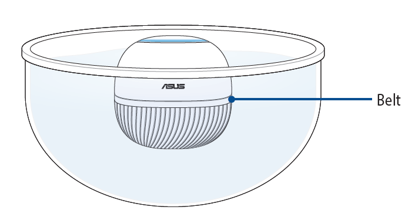

1.Clean the surface of the leafy parts and dirt from the roots of the fruits and vegetables using clean water or with a tool.
2.Soak the fruits and vegetables in clean water for approximately 1 minute to allow agricultural pesticide or other residue such as dust to dissolve in the water. PureGo's revolutionary smart water detection feature makes it so that no buttons have to be pressed during the detection process; PureGo will automatically begin detection once it is placed in the water.
CAUTION!
! To ensure the optical detection chamber is completely immersed in the water,
the belt should be below water level when your PureGo is placed into the water.
3.Continue washing the fruits and vegetables with a small trickle of water to wash away agricultural pesticide or other residue on the surface of the fruits and vegetables, while continuing the detection process with the PureGo.
4.The cleanliness is indicated by the LED ring on PureGo:
• Red (blinking): Lots of pollutants / impurities detected in the water, please
change the water or continue washing thoroughly.
• Orange (blinking): Medium amount of pollutants / impurities detected in the
water, we recommend continuing with washing the fruits and vegetables.
• Green (blinking): Low amount of pollutants / impurities detected in the
water; the cleanliness of the water is close to clean water. You can stop washing.
5. Remove the inedible parts of your fruits and vegetables.